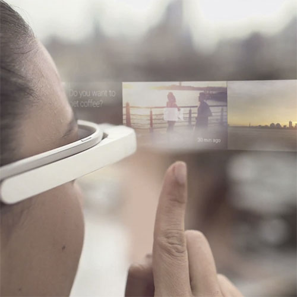
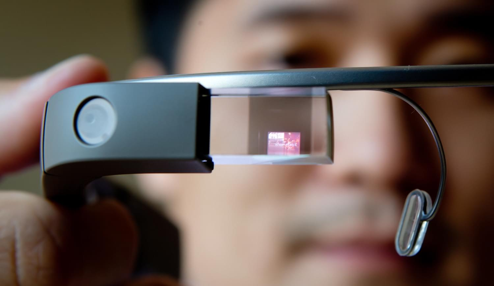

Google Glass a revolução está chegando
Tecnologias e Inovações
Saiba tudo sobre o Google Glass
23/Abril/2013
Tecnologias e Inovações
Saiba tudo sobre o Google Glass
23/Abril/2013
O Google Glass é um acessório em forma de óculos que possibilita a interação dos usuários com diversos conteúdos em realidade aumentada.
 Também chamado de Project Glass, o eletrônico é capaz de tirar fotos a partir de comandos de voz, enviar mensagens instantâneas e realizar vídeoconferências. Seu lançamento está previsto para 2014. Atualmente o Google Glass encontra-se em fase de testes e já possui um vídeo totalmente gravado com o dispositivo. Além disso, a companhia de buscas registrou novas patentes anti-furto e de desbloqueio de tela para o acessório
[AQUI ENTRA UMA FOTO]Não há uma data específica e oficial para o dispositivo ser lançado, ainda. Pode ser que ele esteja disponível em demonstrações a partir de 2013, mas seu lançamento para as lojas fica para, pelo menos, 2014.
RGB
640 pixel x 360 pixel
8 Megapixel color sensor
1080p30 para video
Wi-Fi
Bluetooth 5.0
3GB LPDDR4
32GB eMMC Flash
Qualcomm Snapdragon XR1
Mono Speaker
USB audio
Bluetooth (HFP supported)
3 near field beam-forming microphones
800 mA⋅h (2880 C)
De acordo com fontes próximas do Google, os óculos vão contar com uma pequena tela de LCD ou AMOLED na parte superior e em frente aos olhos do usuário. Com o uso de uma câmera e GPS, você pode se situar, assim como selecionar opções com o movimento da cabeça
O vídeo de divulgação do Google mostra que o aparelho pode indicar a quantos metros você está de seu destino, se o metrô está aberto ou fechado, mostrar o clima, ver videos e imagens, permite até mesmo que você marque encontros apenas com comandos de voz.